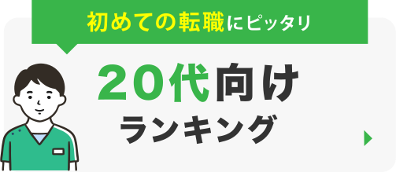
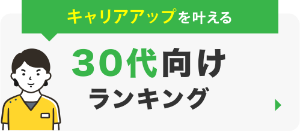
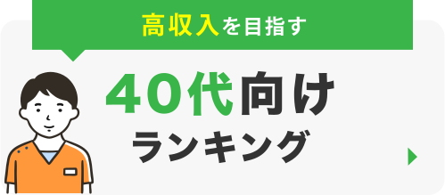
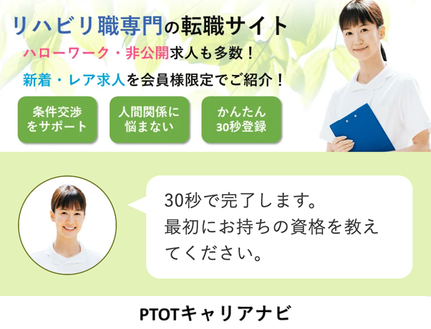

2023年4月最新版
定番の リハビリ職専門転職サイトBEST３
-
年間転職成功者3万の実績！業界最大級の転職サイト
-
年間転職成功者3万の実績！業界最大級の転職サイト
-

年間転職成功者3万の実績！業界最大級の転職サイト
注目の人気ランキング
- 
- 
- 
 |

|
||||
|---|---|---|---|---|---|
| サイト名 | PTOTSTワーカー | PTOTSTワーカー | PTOTSTワーカー | PTOTSTワーカー | PTOTSTワーカー |
| 満足度 | 4.7 | 4.7 | 4.7 | 4.7 | 4.7 |
| 評価と特徴 | 年間転職成功者3万の実績！業界最大級の転職サイト | 40年以上の転職実績を誇る大手マイナビが運営するサイト | 40年以上の転職実績を誇る大手マイナビが運営するサイト | 40年以上の転職実績を誇る大手マイナビが運営するサイト | 40年以上の転職実績を誇る大手マイナビが運営するサイト |
| 対応地域 | 全国 | 全国 | 全国 | 全国 | 全国 |
| 求人数 | th | th | th | th | th |
| 対象年齢 | th | th | th | th | th |
| 雇用形態 | th | th | th | th | th |
| 求人の質 | th | th | th | th | th |
| サポート | th | th | th | th | th |
| サービス | th | th | th | th | th |
理学療法士が選ぶ
PT・OT・ST求人・転職サイト
ランキングBEST5はこちら！
PTOTSTワーカー
総合評価
 4.7
4.7
年間転職成功者3万人の実績！業界最大級の転職サイト
POTOSTワーカーの特徴
- 年間転職成功者3万人越えの実績
- 年間転職成功者3万人越えの実績
- 年間転職成功者3万人越えの実績
- 年間転職成功者3万人越えの実績
- 求人数
- 公開求人数：62,291件 非公開求人数：25,649件
- 対応エリア
- 全国
- 対象年代
- 全年代
- 得意な業種
- 理学療法士、作業療法士
言語聴覚士
- 求人数
- 求人紹介、見学・面接日調整、面接対策、条件交渉、入社後のアフターフォロー
- 個別対応時間
- 平日（9：30~18:30）
編集部のイチオシポイント！
PTOTSTワーカーは、業界最大級の求人数を保有している転職サービスです。年間転職成功者は30,000人を超える実績を持っています。 また、PT・OT・ST専門のアドバイザーが在籍しており、入職後のアフターフォローまで万全です。 地方の方でも充分な転職サポートを受けられるので、転職活動を始める方は、まず登録しておきましょう！
あなたにピッタリな リハビリ転職絞込み検索
迷ったらまずはココを登録すれば安心！
-
PTOTSTワーカー
業界最大級！年間転職成功者3万人を出す転職サイト
-
マイナビコメディカル
大手マイナビが運営する40年以上の転職実績を持つサイト